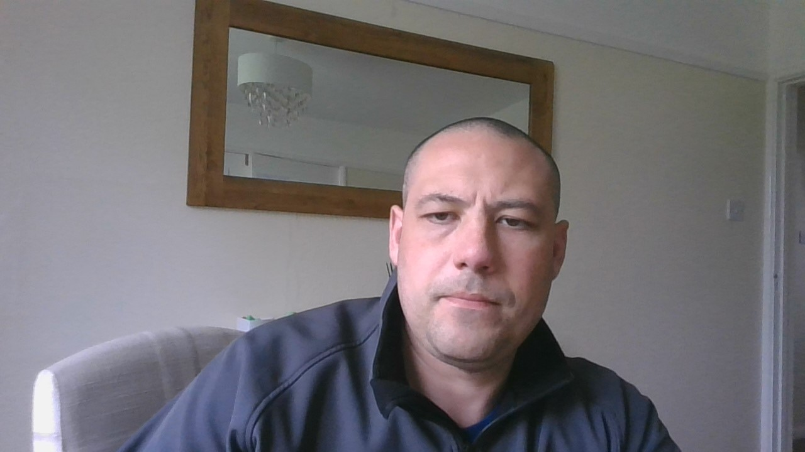

Resume
Daniel Bateman

Objective Statement
Secure a part time and remote opportunity to fully utilize my training and
skills, while continuing to serve my country with the British Army.
Education
Open University 2021 - Present
Bsc Hons Computer science
Througout my studies I have covered topics relating to the wider topic of computer science. Going forward my focus will be on programing and project management.
Modules passed at timeof writing:
- Introduction to computing and information technology 1 (TM111)
- Introduction to computing and information technology 2 (TM112)
- Discovering mathematics (MU123)
- Technologies in practice (TM129)
- Managing IT: the why, the what and the how (TM254)
- Web technologies (TT284)
RACPD (Royal Artillery Centre for Personal Development) 2020 - present
Throughout my army career I have utilised the opportunity for learning and gaining qualifications to help the progresion of my career.
I have completed the following courses:
- Functional skills Level 2 Maths
- Functional Skills Level 2 English
- Level 1 Apprenticship in Express delivery
Risca Community Comprehensive School 1998 - 2003
While at school i received GCSE's in:
- English literature
- English Language
- Maths
- Double Award Science
- Geography
- French
- Humanities
- Design and Technology
Employment History
British Army 2020 - Present
Artillery Command Systems JNCO
Key Responsibilities
- Control sophisticated communication systems
- Be a vital link between all troops operating on the battlefield
- Direct missiles
- Play an essential part in mission success
HGV Driver 2016 - 2020
Contact
Please use the below link to find details on how to contact me.
Contact Details